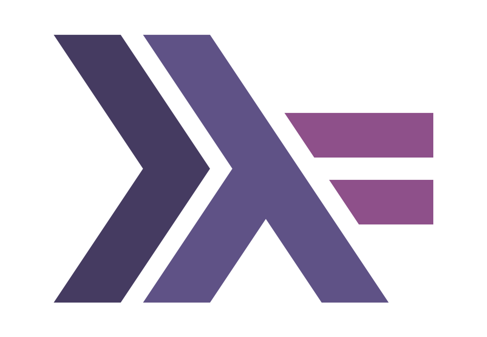
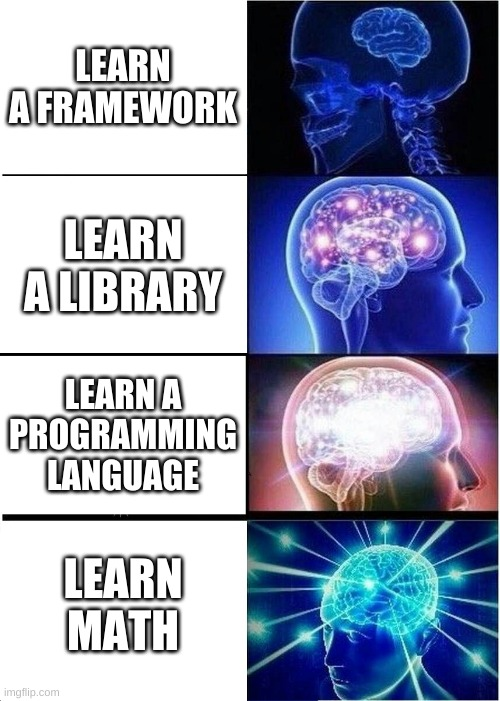
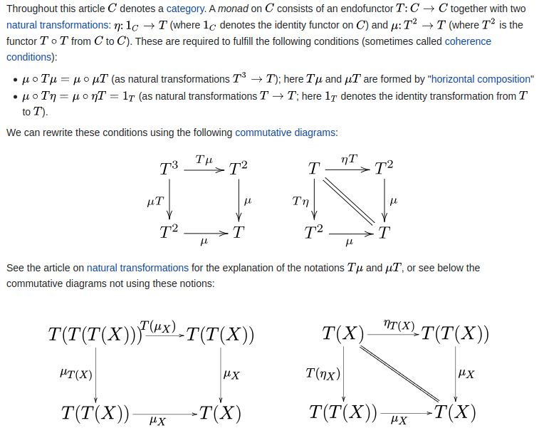

Bachelor-Seminar:
— Angewandter „abstract nonsense“ —
Haskell
„Du programmierst nicht Haskell —
Haskell programmiert dich.“
Warum Haskell lernen?

Was ist Haskell?
-- Main.hs
-- Beispiel Hello world Programm
main :: IO ()
main = putStrLn "Hello, World!"
./Main
(out) Hello, World!
test :: String -> String
test s = s ++ " Haskell ist Cool!"
-- Hier können wir nun Funktionen komponieren
main :: IO ()
main = putStrLn (test "Hello, World!")
./Main
(out) Hello, World! Haskell ist Cool!
(f . g) x = f (g x)
-- (.) :: (b -> c) -> (a -> b) -> a -> c
f $ g $ x = f (g x)
-- ($) :: (a -> b) -> a -> b

#!/usr/bin/env python3
def unrein(x):
x = 1
if __name__ == "__main__":
x = 0
unrein(x)
print(x)
module Main where
main :: IO ()
main = putStrLn "Hello, World!" -- unrein?
./Main
(out) Hello, World!
„Haskell is [...] quite different from most other programming languages“
module Main where
main :: IO () -- ← Monade
main = putStrLn "Hello, World!"

-- :t putStrLn
putStrLn :: String -> IO ()
-- :t "Hello, World!"
"Hello, World!" :: String
$$\text{putStrLn} : \text{String} \longrightarrow \text{IO } ()$$
$$\text{putStrLn}(\text{"Hello, World!"}) = ???$$
-- Haskell logo
(>>=) :: Monad m => m a -> (a -> m b) -> m b
r = [1..] -- Analog zu {1,...}
s = take 10 t
t = [":) " | _ <- s] -- Analog zu (x for x in y)
\[\begin{align*}
r &= [1, 2, 3, 4, \ldots] \\
s &= [1, 2, 3, 4, 5, 6, 7, 8, 9, 10] \\
t &= [":) ", ":) ", ":) ", ":) ", ":) ", ":) ", ":) ", ":) ", ":) ", ":) "] \\
\end{align*}\]
p = [t | t <- [1..], isPrime t]
where
isPrime :: Integer -> Bool
isPrime 1 = False
isPrime n = all (\x -> n `mod` x /= 0) [2..n-1]
\[\begin{align*}
p = [2, 3, 5, 7, 11, 13, 17, 19, 23, 29, \ldots] \\
\end{align*}\]
- \(\lambda\)-Funktion mit Param. \(x\)
- schicke \(x\) auf \(n \text{ mod } x\)
- teste ob \(n \text{ mod } x \neq 0\)
p = [t | t <- [1..], isPrime t]
where
isPrime :: Integer -> Bool
isPrime 1 = False
isPrime n = all (\x -> n `mod` x /= 0) [2..n-1]
p = [t | t <- [1..], isPrime t]
where
isPrime :: Integer -> Bool
isPrime 1 = False
-- Infix
isPrime n = all (\x -> n `mod` x /= 0) [2..n-1]
p = [t | t <- [1..], isPrime t]
where
isPrime :: Integer -> Bool
isPrime 1 = False
-- Prefix
isPrime n = all (\x -> mod (n x) /= 0) [2..n-1]
p = [t | t <- [1..], isPrime t]
where
isPrime :: Integer -> Bool
isPrime 1 = False
isPrime n = all (\x -> n `mod` x /= 0) [2..n-1]
p = [t | t <- [1..], isPrime t]
where
isPrime :: Integer -> Bool
isPrime 1 = False
isPrime n = (\x -> n `mod` x /= 0) `all` [2..n-1]
-- :t all
all :: Foldable t => (a -> Bool) -> t a -> Bool
module Types where
s :: String
s = "Hallo :)"
i :: Int
i = 5
f :: Float
f = 3.141592
todouble :: Float -> Double
todouble x = realToFrac x
proj :: a -> String
proj etwas = "😎"
module Datatypes where
data Liste a = LeereListe | Listenelement (Liste a) a
data Arbeiter = Angestellter
| Manager
| Hilfspersonal
data Liste a = LeereListe | Listenelement (Liste a) a
data Arbeiter = Angestellter
| Manager
| Hilfspersonal
listeErzeugen :: Arbeiter -> Liste Arbeiter
listeErzeugen Angestellter = Listenelement LeereListe Angestellter
listeErzeugen Manager = Listenelement LeereListe Manager
listeErzeugen Hilfspersonal = Listenelement LeereListe Hilfspersonal
elementHinzufuegen :: Liste Arbeiter
-> Arbeiter
-> Liste Arbeiter
elementHinzufuegen x y = Listenelement x y
Wir erkennen, dass
data Liste a = LeereListe | Listenelement (Liste a) a
eine Monoidstruktur hat!
Monoidstruktur:
- Es gibt eine binäre Operation (Listen Konkatenieren) (Magmastruktur)
- Die Operation ist Assoziativ (Halbgruppenstruktur)
- Es gibt ein Neutrales Element (leere Liste) (Monoidstruktur)
instance Semigroup (Liste a) where
(<>) LeereListe LeereListe = LeereListe
(<>) LeereListe v = v
(<>) v LeereListe = v
(<>) v (Listenelement w z) = Listenelement (v <> w) z
instance Monoid (Liste a) where
mempty = LeereListe
Jetzt gehört unser Listendatentyp zur Klasse aller Typen, welche
eine Monoidstruktur haben!
Triviale Instanzen können automatisch abgeleitet werden
data Liste a = LeereListe | Listenelement (Liste a) a
deriving (Show)
data Arbeiter = Angestellter
| Manager
| Hilfspersonal
deriving (Show)
show ( Listenelement LeereListe "hallo" )
-- Ausgabe: Listenelement LeereListe "hallo" :: String
Und warum so „umständlich“?
Wir können nun alle Funktionen, welche für Monoide geschrieben wurden verwenden
Es gibt eine kanonische Monoidstruktur auf Abbildungen in Monoide.
f :: a -> Liste a
f x = Listenelement LeereListe x
g :: a -> Liste a
g x = Listenelement LeereListe x
<> Listenelement LeereListe x
f ":)" -- Wird zu ...
Listenelement LeereListe ":)"
g ":)" -- Wird zu ...
Listenelement (Listenelement LeereListe ":)") ":)"
(f <> g) ":)" -- Wird zu ...
Listenelement (Listenelement (Listenelement LeereListe ":)") ":)") ":)"
module ListBeispiel where
import Data.List
import Data.Ord
test :: [String] -> [String]
-- Allgemeiner: test :: (Foldable t, Ord (t a)) => [t a] -> [t a]
test = sortBy (comparing length <> compare)
test = sortBy (comparing length <> compare)
test ["hallo", "wie", "geht", "es", "dir", "?"] -- Wird zu...
-- => ["?","es","dir","wie","geht","hallo"]
test = sortBy (comparing length <> compare)
-- Umformung
= sortBy (comparing length) <> sortBy compare
-- Hilfe zu den Typen
sortBy :: (a -> a -> Ordering) -> [a] -> [a] -- Documentation
comparing :: Ord a => (b -> a) -> b -> b -> Ordering -- Documentation
length :: Foldable t => t a -> Int -- Documentation
compare :: Ord a => a -> a -> Ordering -- Documentation
-- Typen von Kompositionen
comparing length :: Foldable t => t a -> t a -> Ordering
-- parametrisch
-- funktioniert für jede Funktion * -> *
id :: a -> a
map :: (a -> b) -> [a] -> [b]
[] :: [a]
-- ad-hoc
-- eigene implementation für jeden Typ
(==) :: Eq a => a -> a -> Bool
elem :: (Eq a) => a -> [a] -> Bool